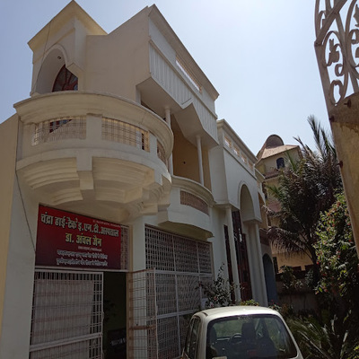

Specialised ear, nose and throat care by Dr. Anchal Jain
Chandra Hi-Tech ENT Hospital provides ENT consultation and listed treatment services in the MLB Medical College area of Jhansi.


Care areas listed for the hospital
Only publicly available services are included. Please call the clinic to confirm availability for a specific procedure or concern.
Ear Care
Ear infection treatment, congenital ear problem care, ear lobe correction / repair, myringotomy and mastoidectomy are listed online.
Nose & Sinus
Nasal disorders, nose disease, sinonasal concerns and ENT endoscopy-related care are listed in public sources.
Throat & Tonsil
Throat problem treatment, tonsillectomy and adenoidectomy are among the listed ENT services.
Pediatric ENT
Pediatric otolaryngology and pediatric consultation are listed as available care areas.
Dr. Anchal Jain
MBBS, MS - ENT. Dr. Anchal Jain is an ENT / Otorhinolaryngologist at Chandra Hi-Tech ENT Hospital, Jhansi.
- ENT consultation
- Listed timings: Mon-Fri 09:00-17:45, Sat-Sun 09:00-17:00
Need an ENT consultation?
Call before visiting to confirm doctor availability, appointment slot and service availability.